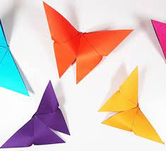

Origami Instructions and Diagrams
Step by step instructions are the most popular way to learn
origami. However, trying to find good step by step tutorials
can be diffcult, so we've put together a database where you can
find instructions for a multitude of origami pieces.
Crane
Origami is derived from two Japanese words: Ori (folded) and Kami (paper).
Located in Japan, the biggest origami of all time is a bird, it's 86 meters tall and was made by 800 people.
In feudal Japan, samurai prepared themselves for battle with training in martial arts and by making origami.
Lotus Flower
A Japanese book from the 18th century is the oldest known origami manual.
Ancient Japanese legend says that if you fold one thousand cranes you will be granted a wish.
NASA is researching origami-based techniques to design ultra-efficient solar panels.

Butterfly
Initially the art of paper folding was restricted only to ceremonial occasions.
Paper butterflies were made to symbolize the brides and grooms in Shinto wedding traditions.
The Guinness Book of World Records displays dozens of records regarding origami.